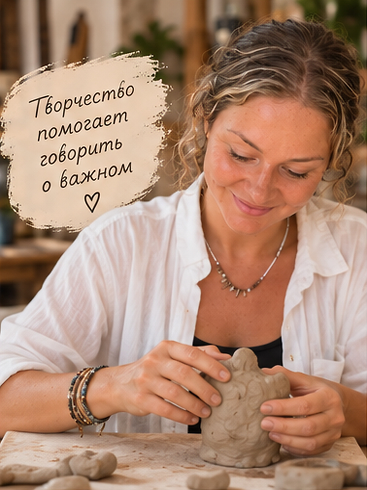
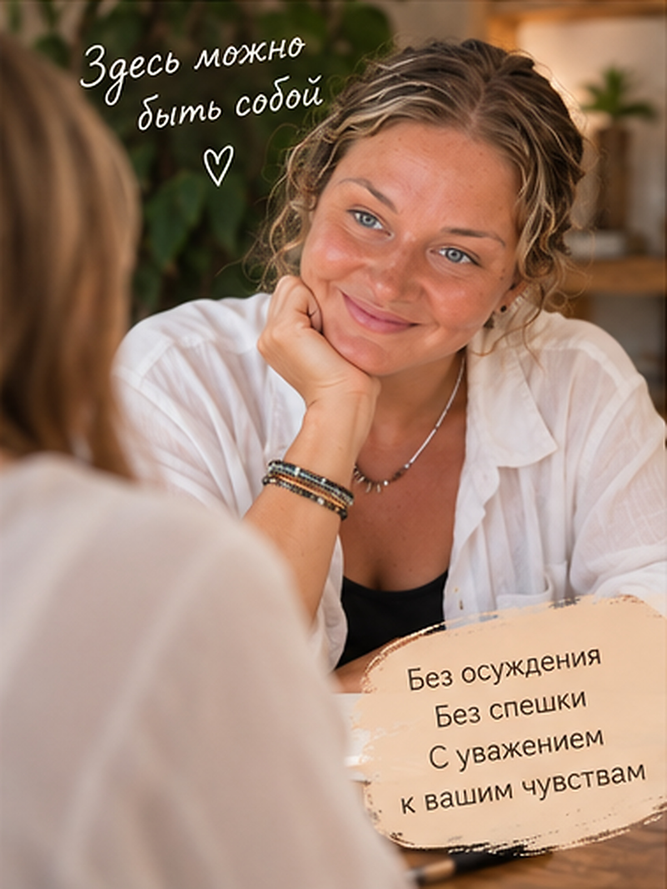
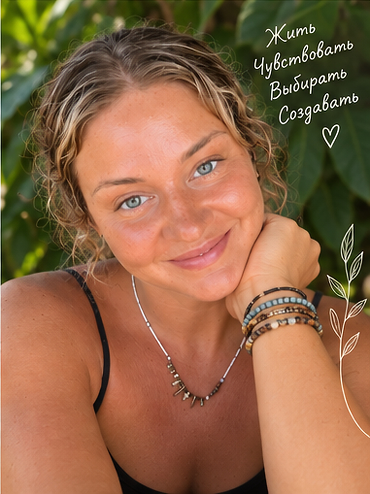

Онлайн-консультация
4 000 ₽60 минут · из любой точки мира
Встреча со специалистом, в которой можно не торопиться и говорить о том, что действительно важно.

Короткий предварительный разговор, чтобы познакомиться, обозначить запрос и понять, подходит ли вам формат работы. Это не полноценная консультация.
Договориться о знакомстве в Telegram →A brief introductory conversation to meet, discuss your needs and see whether the format is right for you. This is not a full therapy session.
Arrange an introduction on Telegram →АННА АНОПОВА · ПСИХОЛОГ И АРТ-ТЕРАПЕВТ
Вы можете выбрать удобный формат встречи. Продолжительность каждой консультации — 60 минут.
Онлайн-консультация
4 000 ₽60 минут · из любой точки мира
Очная консультация
5 500 ₽60 минут · место встречи уточняется при записи
Мы верим, что возможность получить психологическую поддержку не должна полностью зависеть от финансовых обстоятельств. Каждый месяц предусмотрено несколько мест для онлайн-консультаций по сниженной стоимости.
2 500 ₽ за 60 минут
Льготные места предназначены для людей, которым сейчас трудно оплатить полную стоимость встречи, в том числе:
Количество мест ограничено. Возможность записи обсуждается индивидуально; подтверждающие документы не требуются.
Уточнить свободное время, очный формат или наличие льготных мест можно напрямую у специалиста.
Сайт Анны Аноповой ↗Написать в Telegram ↗Написать в WhatsApp ↗ANNA ANOPOVA · PSYCHOLOGIST & ART THERAPIST
Choose the format that works for you. Each session lasts 60 minutes.
Online session
₽4,00060 minutes · wherever you are
In-person session
₽5,50060 minutes · location confirmed before booking
Access to psychological support should not depend entirely on financial circumstances. A limited number of online appointments are offered each month at a reduced fee.
₽2,500 for 60 minutes
These places are for people who currently find the standard fee difficult to afford, including:
Availability is limited and discussed individually. No supporting documents are required.
Contact the practitioner directly to discuss availability, in-person sessions or reduced-fee places.
Anna Anopova’s website ↗Message on Telegram ↗Message on WhatsApp ↗Когда тревожно, трудно проживать перемены, отношения закончились, вы переживаете утрату или не понимаете, куда двигаться дальше. Необязательно заранее точно формулировать запрос.
Первые 15 минут знакомства бесплатны: можно коротко обсудить запрос, задать вопросы и решить, подходит ли вам формат. Затем — индивидуальная консультация продолжительностью 60 минут. В работе возможны разговор и арт-терапевтические методы.
Доступны онлайн-консультации и очные встречи по предварительной договорённости. Стоимость и способы записи указаны ниже.
Ознакомьтесь с опытом, подходом и темами работы.
Узнайте об онлайн- или очной встрече, свободном времени и стоимости.
На первой встрече можно спокойно определить, какая помощь подходит.
В работе я соединяю разговор, внимание к чувствам и творческие способы исследования собственного опыта.


